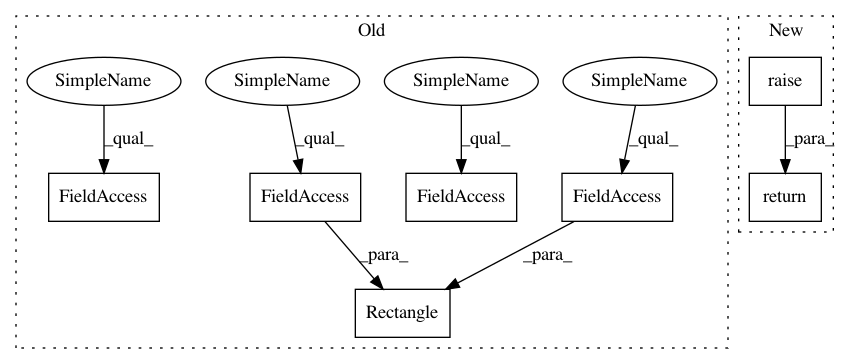

8aa27bbac3e52d7f214ba22028afcbd4cf13b97d,scipy/spatial/kdtree.py,KDTree,query_pairs,#KDTree#Any#Any#Any#,733
Before Change
traverse_no_checking(node1.less, node2)
traverse_no_checking(node1.greater, node2)
traverse_checking(self.tree, Rectangle(self.maxes, self.mins),
self.tree, Rectangle(self.maxes, self.mins))
return results
def count_neighbors(self, other, r, p=2.):
After Change
>>> plt.show()
return super().query_pairs(r, p, eps)
def count_neighbors(self, other, r, p=2.):
Count how many nearby pairs can be formed.
In pattern: SUPERPATTERN
Frequency: 3
Non-data size: 7
Instances
Project Name: scipy/scipy
Commit Name: 8aa27bbac3e52d7f214ba22028afcbd4cf13b97d
Time: 2020-07-07
Author: peterbell10@live.co.uk
File Name: scipy/spatial/kdtree.py
Class Name: KDTree
Method Name: query_pairs
Project Name: scipy/scipy
Commit Name: 8aa27bbac3e52d7f214ba22028afcbd4cf13b97d
Time: 2020-07-07
Author: peterbell10@live.co.uk
File Name: scipy/spatial/kdtree.py
Class Name: KDTree
Method Name: sparse_distance_matrix
Project Name: scipy/scipy
Commit Name: 8aa27bbac3e52d7f214ba22028afcbd4cf13b97d
Time: 2020-07-07
Author: peterbell10@live.co.uk
File Name: scipy/spatial/kdtree.py
Class Name: KDTree
Method Name: query_pairs
Project Name: scipy/scipy
Commit Name: 8aa27bbac3e52d7f214ba22028afcbd4cf13b97d
Time: 2020-07-07
Author: peterbell10@live.co.uk
File Name: scipy/spatial/kdtree.py
Class Name: KDTree
Method Name: query_ball_tree